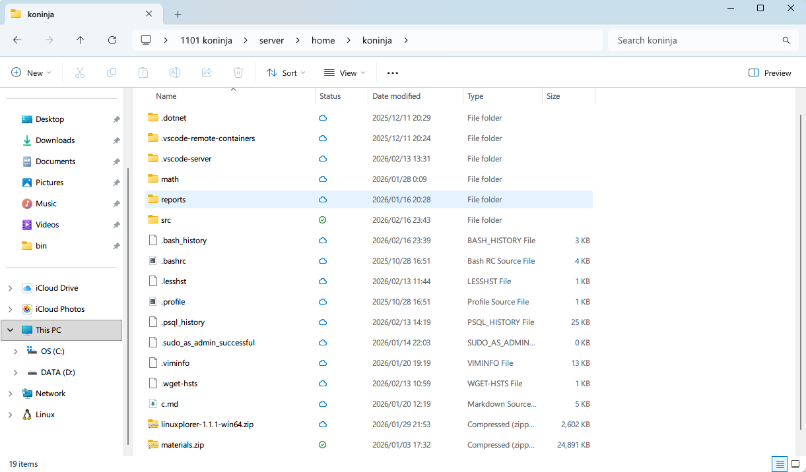

Linuxplorer
A portable SFTP client integrated with Windows Explorer
Features
For developers
Linuxplorer is a minimal C++ implementation of the Windows Cloud Filter API. If you're looking for a native Win32 (non-WinRT, non-C#) example, this project demonstrates a lifecycle of a cloud sync provider.